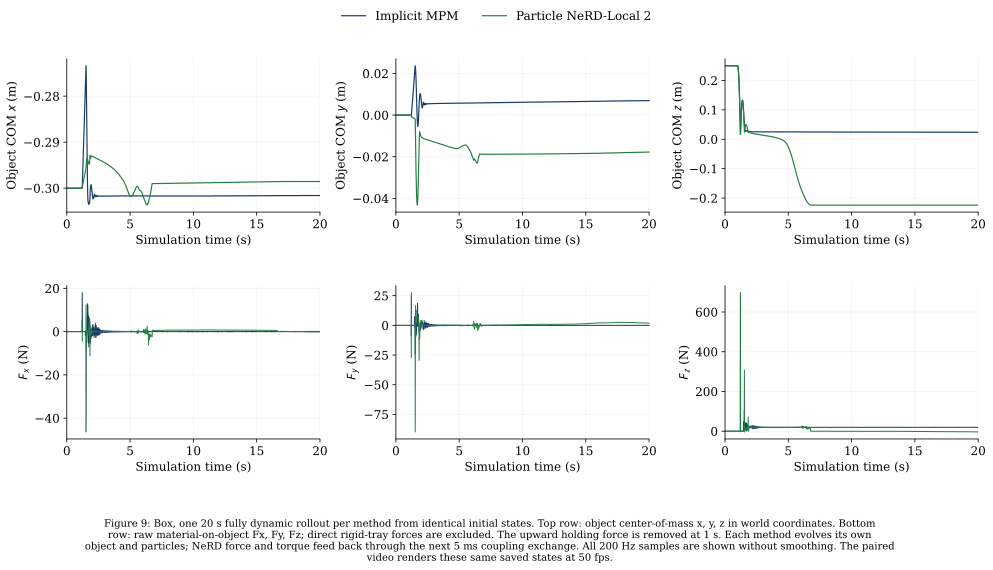
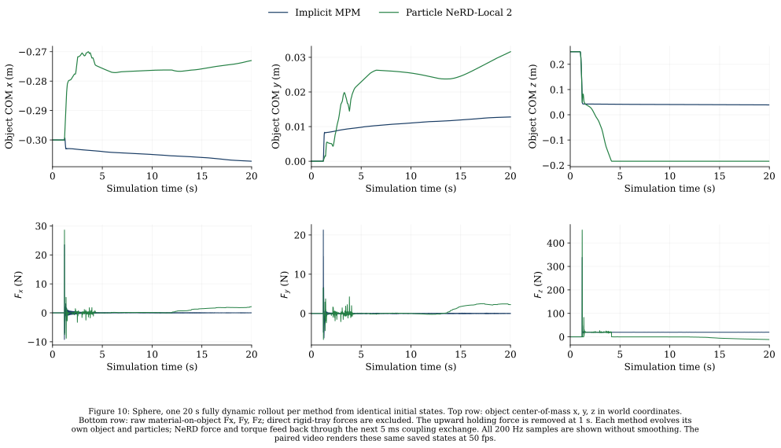
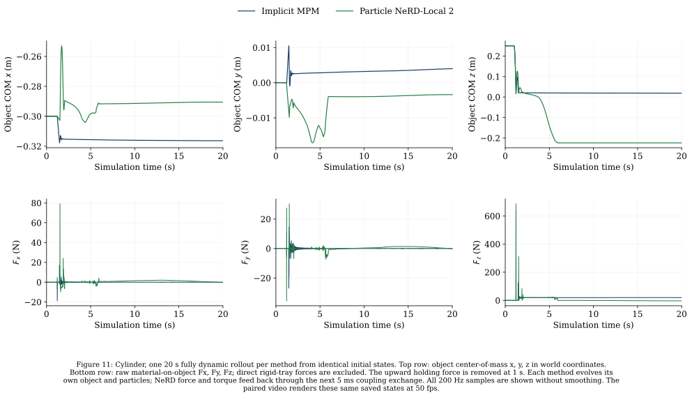

BOX · SPHERE · CYLINDER
Particle NeRD-Local 2: shared object-model prediction accuracy
One shared Particle NeRD-Local 2 particle model: recorded-motion particle/force evaluation and separately reported fully dynamic object simulations.
Evaluation conditions
| Item | Condition |
|---|---|
| Object geometry | Box: 0.24 × 0.18 × 0.12 m; Sphere: radius 0.10 m; Cylinder: radius 0.10 m, height 0.12 m, local z axis. |
| Coordinates | Shared world coordinates; z points upward, gravity is (0, 0, −9.81) m/s². The nominal initial sand fill level is z = 0 m and the rigid tray floor is z = −0.30 m. |
| Dataset and split | 600 six-second trajectories: 200 each for Box, Sphere and Cylinder; 480 training, 60 validation, 60 held-out test trajectories. |
| MPM dataset motion: kinematic | 360 trajectories: horizontal motion, vertical motion, circles and holding. Object poses are imposed. |
| MPM dataset motion: dynamic | 240 trajectories: drops, slides, throws and tumbles. Two-kilogram objects are released after the first second and respond to gravity and contacts. |
| Sand and resolution | 2 × 1.2 × 0.30 m flat bed; 20,646 particles; MPM grid 0.04 m; particle spacing 0.032 m, radius 0.016 m; seeded bounded position jitter up to 0.0064 m per coordinate. |
| Material | Density 1,600 kg/m³, Young’s modulus 10¹⁵ Pa, Poisson ratio 0.3, material friction 0.48, yield pressure 10¹⁵ Pa; collider friction 1.0. |
| Sampling | Native interval 0.005 s (200 Hz). Particle velocities are derived from consecutive positions. Initial settling is included. |
| Shared model | One checkpoint from update 8,500, selected by the lowest validation loss with equal weighting of moving and stationary particles. Its training windows reached 100 steps. Test trajectories are never used for selection. |
| Model architecture | ParticleNeRD-Local (translation-invariant + CConv + 3D-RoPE slices): 4 attention blocks, hidden size 128, cconv 64, 4 heads, 64 slices, 3 history frames; displacement scale 0.02 m. |
| Checkpoint validation | 24 of the 60 reserved validation trajectories; 48 windows of 1 s. Each selected trajectory contributes initial settling and a motion-specific window. The loss separates moving/stationary groups at 0.5 mm reference displacement per step; this differs from the 0.01 m/s threshold used by the reported regional position metric. |
| Training progress when weights were frozen | 12,000 of 12,000 planned updates had been recorded. All results on this page use the same frozen checkpoint; subsequent training does not change them. |
| Time to evaluated checkpoint | 189.3 minutes through checkpoint validation on 4 GPUs, excluding setup and data transfer. |
| Neural update | Full-particle recurrent prediction. No Top-K selection, foot-speed displacement gate, particle projection, or force filtering. This object model is separate from the deployed G1 solver. |
| Evaluation | Recorded-motion tests use imposed MPM body inputs with recurrent predicted particles; no reference particle replacement after initialization. Separate fully dynamic comparisons close the object force loop; Table 2 identifies each evaluation set. |
| Checkpoint SHA-256 | 0ec69c79cceccbfeba9c3a063df5ed72dc3a4716328c54481c21509c41fb82bc |
Kinematic and dynamic evaluation sets
Kinematic replay means the object follows recorded MPM poses, even when those poses originally came from a dynamic simulation. NeRD particles evolve from their own predicted history in both modes. Dynamic simulation means the object responds to gravity, rigid tray contacts, and NeRD’s estimated material force and torque.
Kinematic replay describes how object motion is imposed. Force reconstruction for dynamic-source recordings still uses the physical body mass and inertia.
| Evaluation set | MPM reference generation | NeRD object motion | NeRD material force changes object motion? |
|---|---|---|---|
| 60 held-out trajectories: horizontal, vertical, circular, holding (36) | Kinematic / prescribed | Kinematic replay | No |
| 60 held-out trajectories: drop, slide, throw, tumble (24) | Dynamic after release at 1 s | Kinematic replay | No |
| Force reference: box horizontal (1) | Kinematic / prescribed | Kinematic replay | No |
| Force references: box, sphere, cylinder drop-and-support (3) | Dynamic after release at 1 s | Kinematic replay | No |
| Stationary-object consistency: box, sphere, cylinder (3) | Kinematic insertion and fixed pose | Kinematic replay | No |
| Fully dynamic comparison: box, sphere, cylinder drop-and-support (3) | Dynamic after release at 1 s; same MPM support references | Dynamic simulation | Yes: estimated force and torque |
Recorded motions for metrics 1–4
Each shape has 20 held-out six-second trajectories: three each for horizontal motion, vertical motion, circles, and holding; two each for drops, slides, throws, and tumbles. The plots include all 60 trajectories.
Choose a shape and motion below. These 24 clips show the first held-out trajectory in each shape/motion group. Each clip is one of the recorded trajectories included in the plots. Both panels replay the same MPM body motion while their particles follow their respective saved states.
All clip identities and selection rule. The dynamic objects respond to forces during the original MPM recording; during Particle NeRD-Local 2 evaluation, their recorded poses are imposed.
1. Particle-position error
Definition in metrics/README.md
60/60 held-out six-second trajectories completed. Each dot is one trajectory summary. Boxes show median and interquartile range; diamonds mark means. Whiskers extend to 1.5 IQR and every measured value is plotted, including outliers. An empty particle region remains unavailable. No smoothing or time shifting is applied.
Exact numerical results and availability counts · Plot input and output hashes. Numerical completion does not establish physical accuracy. These are errors of one frozen object model against MPM.
Watch the recorded motions used for metrics 1–4.
Particle-position RMSE, globally and by region
![Rows show particle-position RMSE for the entire bed, near-contact particles, and moving particles. Left column: time-mean over 0–6 s; right column: terminal state at 6 s. NeRD errors use corresponding MPM particles. Near-contact reference distance ≤0.05 m; moving reference speed >0.01 m/s. One terminal-state moving region is empty and remains unavailable. Each dot is one trajectory summary; boxes show the median and interquartile range, whiskers extend to 1.5 IQR, diamonds mark means. Twenty trajectories per shape unless labeled otherwise. Time means use available samples; empty particle regions are not assigned zero error.](test_particle_errors.svg)
2. Sand-surface error
Definition in metrics/README.md
The mean and 95th-percentile symmetric surface distance measure the reconstructed sand shape. The plotted measurements use a 0.02 m grid for reconstructing the sand surface from recorded particles. This is a measurement setting, separate from the 0.04 m MPM simulation grid. The README also requests a reconstruction-resolution sensitivity check: its 0.03 m results remain in the downloadable results, outside the main metric plot.
Watch the recorded motions used for metrics 1–4.
Mean and 95th-percentile symmetric surface distance
![Rows show the mean and 95th-percentile symmetric surface distance. Left column: time-mean over 0–6 s; right column: terminal state at 6 s. Distances use area-uniform surface samples without alignment. The 95th percentile is over surface distances within a frame, not across trajectories. Sand surfaces use a 0.02 m measurement grid. Each dot is one trajectory summary; boxes show the median and interquartile range, whiskers extend to 1.5 IQR, diamonds mark means. Twenty trajectories per shape unless labeled otherwise. Time means use available samples; empty particle regions are not assigned zero error.](test_surface_errors.svg)
3. Material distribution and sub-foot depletion
Definition in metrics/README.md
These object tests use the same material-mass discrepancy on a common grid. For the local depletion diagnostic, the region is beneath the box, sphere, or cylinder; these tests do not contain robot feet. Each case page defines the region.
Watch the recorded motions used for metrics 1–4.
Material-mass discrepancy on a common grid
![The first row shows time-mean and terminal-state material-mass discrepancy: sum of absolute cell-mass differences divided by total physical mass. The second row shows terminal-state mass beneath and inside the body; the last panel shows total represented mass. Terminal state is 6 s. Equal total mass does not imply correct distribution or confinement to the tray. Each dot is one trajectory summary; boxes show the median and interquartile range, whiskers extend to 1.5 IQR, diamonds mark means. Twenty trajectories per shape unless labeled otherwise. Time means use available samples; empty particle regions are not assigned zero error.](test_material_distribution.svg)
4. Velocity fields and kinetic energy
Definition in metrics/README.md
Watch the recorded motions used for metrics 1–4.
Velocity fields and kinetic energy
![Rows show velocity-field RMSE, the fraction of reference mass covered by shared occupied cells, and particle kinetic energy. Left column: time-mean over 0–6 s; right column: terminal state at 6 s. Velocities use matched consecutive-position differences. Each dot is one trajectory summary; boxes show the median and interquartile range, whiskers extend to 1.5 IQR, diamonds mark means. Twenty trajectories per shape unless labeled otherwise. Time means use available samples; empty particle regions are not assigned zero error.](test_velocity_energy.svg)
5. Contact-force accuracy and standing stability
Definition in metrics/README.md
The 60 held-out dataset recordings have no reference forces. Force accuracy is measured on four dedicated recordings with the same checkpoint. Each includes an exact matching 50 fps video and full curves. Body poses are replayed from MPM; estimated forces do not change them.
- Box: horizontal motion on flat sand
- Box: 20-second support test
- Sphere: 20-second support test
- Cylinder: 20-second support test
Recorded motions for contact-force accuracy
Box: horizontal motion on flat sand
The box is lowered into the sand and follows a prescribed horizontal path for this six-second recording.
Box: 20-second support test
The object is released at 1 s and settles dynamically in the MPM recording. Support is measured over 20 s.
Sphere: 20-second support test
The object is released at 1 s and settles dynamically in the MPM recording. Support is measured over 20 s.
Cylinder: 20-second support test
The object is released at 1 s and settles dynamically in the MPM recording. Support is measured over 20 s.


Chamfer and Wasserstein distances remain optional, unmeasured diagnostics.
6. Spatio-temporal consistency under a stationary object
Definition in metrics/README.md
New experiment: box, sphere and cylinder each follow a vertical insertion from 1–2 s and are then held at an exactly fixed pose through 23 s. Translation, rotation, and input linear/angular velocities are verified constant/zero throughout measurement. There is one paired run per shape, seed 42.
Each method evolves from identical particles at 0 s. Measurements compare each method with its own state at 3 s, then track 20 seconds of change. The 3 s anchor neither resets particles nor establishes equilibrium. This is a prescribed-object material test, not freely balancing locomotion. The fixed pose can remain suspended if sand moves away. No retraining or stabilization was added.
Particle drift is the physical-mass-weighted RMS displacement. Signed vertical drift is the physical-mass-weighted mean change in world z (negative downward). The late drift rate is the least-squares slope over 13–23 s using every 200 Hz sample. Surface change uses the same method’s 3 s surface without alignment; mass change is the L1 difference of grid masses divided by total mass.
![One fixed-object run per shape; open circles mark measured zeros. Top row: mass-weighted mean change in world z at 23 s relative to 3 s, and its least-squares rate over 13–23 s. Middle row: RMS particle drift and mean material-isosurface change. Bottom row: normalized absolute grid-mass redistribution and mass remaining beneath the object relative to 3 s. Negative z means downward. Each solver is compared with its own 3 s state without reset. One escaped MPM particle dominates box/cylinder RMS (>99% of squared displacement); this does not describe bulk-bed drift.](hold_summary.svg)
![Open circles mark measured zeros. Top row: physical mass beneath the object at 3 and 23 s. The region is its world x/y bounding rectangle extending 0.10 m below the lowest body point, clipped above the floor. Middle row: mass with centers below the z=−0.30 m floor (1 μm tolerance), and mass more than 1 cm below it. Last panel: lowest particle-center z at 23 s, with symmetric-log scale (linear within ±1 m). Percentages use total represented physical mass. One paired run per shape; all escaped particles are retained. MPM also settles and leaks.](hold_material.svg)
Reference limitation: the MPM bed also continues to settle. In the box and cylinder recordings, one MPM particle escapes far below the tray: z = −114.40 m for box and −126.67 m for cylinder. That single particle contributes 99.40% and 99.51% of squared displacement, respectively. Their large RMS values therefore do not mean that the bulk MPM bed drifts more than NeRD. No particle is removed from any temporal metric. These runs diagnose drift and boundary leakage; they do not demonstrate a correct static equilibrium for either method.
The original paired field evaluator exceeded its 20-million-node limit for box and cylinder; those paired field metrics remain unavailable. The separate temporal analysis uses the identical 0.02 m CIC and density-surface rules with an explicit 100-million-node limit. It includes every particle and records failures. Box: fixed-object hold: 0 temporal surface failures. Sphere: fixed-object hold: 0 temporal surface failures. Cylinder: fixed-object hold: 0 temporal surface failures.
Each case page contains its exact 50 fps video, raw forces and full temporal curves:
Exact measured summaries and settings. Full scalar time series, input hashes, and resolution sensitivity are linked on each case page.
Fully dynamic simulation with NeRD force feedback
Three 20-second comparisons, one each for box, sphere, and cylinder. These use the same frozen checkpoint and the same initial states as the existing MPM drop-and-support references. The 2 kg object starts with its center at z = 0.25 m. An upward force balances gravity until 1 s, then is removed. After release, each method evolves its own object motion and particles; no recorded MPM body motion or future particle state is supplied to NeRD.
NeRD predicts all 20,646 particles every 0.005 s. The existing analytical estimator supplies world-frame material force and center-of-mass torque. Both are applied over the two 0.0025 s MJWarp rigid substeps of the next exchange, matching the reference’s lagged coupling. Normal and tangential effective material mass factors remain 10, stabilization remains 0.01, and collider friction remains 1.0. No Top-K selection, displacement gate, particle projection, force filtering, or native MPM solve is used in the NeRD run.
These are three individual coupled-simulation examples. Differences include particle prediction, force reconstruction, and the resulting differences in object motion. They are reported separately from metrics 1–6, which impose matched object motion.
Observed result: In all three NeRD runs, the particles keep moving downward and eventually lose contact with the object. The object then rests against the rigid tray’s contact boundary, while the estimated sand force falls to zero. MPM retains sand support over the same 20 seconds. The recordings below show this behavior in full; they do not establish stable sand support by NeRD.
Box: dynamic drop and support
Left: Implicit MPM. Right: Particle NeRD-Local 2. Both objects move dynamically; their trajectories can diverge. Playback is real time at 50 fps.


PNG · PDF · Simulation conditions · Video provenance
Sphere: dynamic drop and support
Left: Implicit MPM. Right: Particle NeRD-Local 2. Both objects move dynamically; their trajectories can diverge. Playback is real time at 50 fps.


PNG · PDF · Simulation conditions · Video provenance
Cylinder: dynamic drop and support
Left: Implicit MPM. Right: Particle NeRD-Local 2. Both objects move dynamically; their trajectories can diverge. Playback is real time at 50 fps.

